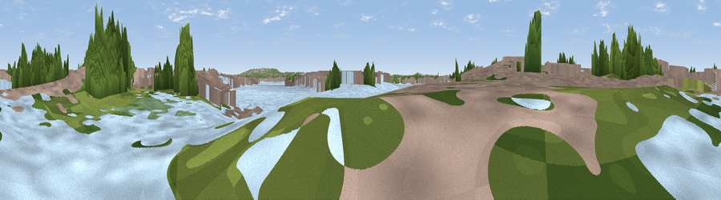

Viewpoint near Greenwich
#45117 in England · top 77% of its area beats it · near GreenwichWhere it is
The exact computed spot (TQ 39013 80799). Click the marker for map links.
The view, rendered

A 360° render of this exact spot computed from the terrain model, tree cover and land cover — summer colours, afternoon light, calibrated against photographs of famous viewpoints. Real trees, hedges and buildings will differ in detail.
The panorama
Grey silhouette: terrain skyline in each direction (720 bearings, Earth curvature and refraction included). Dashed green: skyline with trees (+15 m) and buildings (+8 m) as obstacles. Blue strip: how far the ground is visible on each bearing.
Where the view opens
Wedge length = distance to the farthest visible ground on that bearing (vegetation-aware). Rings at 10, 25 and 50 km.
What fills the view
43% water · 35% built-up · 19% woodland · 2% grassland
Angular shares of the visible panorama (visual magnitude), not map area. Landscape diversity 0.49 (0–1 Shannon).
Key numbers
More beautiful places nearby
The staircase of upgrades: each row has a higher view potential than everything closer. Driving times are estimates from straight-line distance, calibrated against real road routing — check an actual route before setting out.
| Place | Direction | Drive | Score |
|---|---|---|---|
| Viewpoint near Greenwich | S · 3 km | ~8 min | 38.0 |
| Viewpoint near Greenwich | S · 3 km | ~8 min | 41.0 |
| Viewpoint near Woolwich | SE · 6 km | ~13 min | 48.8 |
| Viewpoint near Eltham | SE · 6 km | ~13 min | 52.2 |
| Viewpoint near Erith | E · 13 km | ~24 min | 54.3 |
| Viewpoint near Ebbsfleet Valley | ESE · 22 km | ~37 min | 56.1 |
| Harrow on the Hill | WNW · 25 km | ~40 min | 60.7 |
| Viewpoint near Tatsfield | S · 25 km | ~41 min | 61.0 |
51.50903, 0.00174 · source: osm viewpoint · position refined by local search. Computed location — check access rights before visiting.